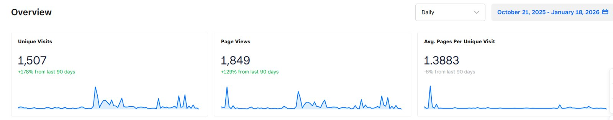
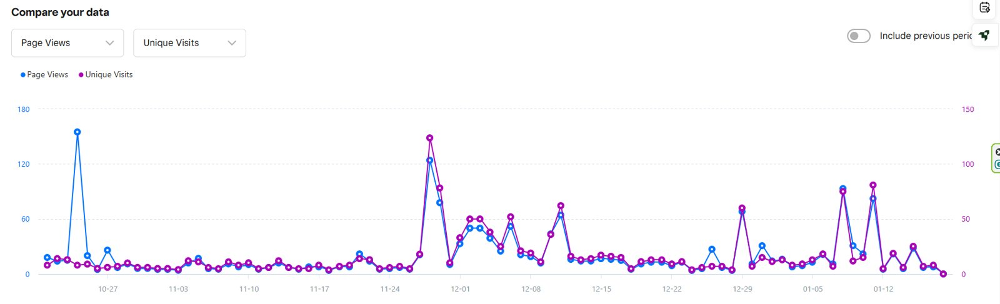
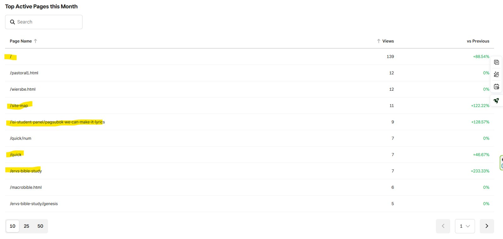

I was looking at the usage statistics on my ISI website for the first time — I'd genuinely never checked before. It was always more a personal tool for capturing anything about God in my life, all tied together under ISI, than something built for an audience. A few screenshots of what I found are below. I was surprised.
I have no real plans to do ministry again in any organized sense. My daughter has been loving and gracious about this — she saw firsthand what the youth ministry cost me, especially back when God apparently thought it better for me to spend time reaching Hells Angels teenagers instead of the kids in my own church group. Her question to me was simple: Dad, could it be that this is just your time to rest and be ministered to, like you did for those teenagers for so many years? Maybe this is even part of why He allowed the tumor — because He knew you wouldn't stop on your own.
Still, I do wonder if there's some kind of website ministry left in this. My pages had 1,849 views in the last 90 days, and 1,507 unique visitors in that same window — which tells me I'm offering some kind of value, and that it might be worth putting more effort into, especially now that my people skills and life management are so compromised in other ways.


Most of the traffic lands on my homepage and site map, which makes sense — from there people can navigate anywhere through the top navbar. The one page that genuinely cracked me up: someone keeps visiting a page I posted years ago about a song called Pagsubok, which I heard on the radio in a Jeepney on my way to the Intel office in the Philippines. I don't speak Tagalog, but something about that song got inside me — enough that I asked the driver its name. I was going through an incredibly stressful season in youth ministry at the time, and when I read the lyrics — “for we can make it if we try” — I believe God sent that song to me directly, telling me to keep doing what I was doing. I still don't know who's visiting that page now, or why the song draws them in too.

Comments